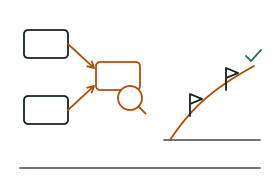

Conseil et transformation numérique
Avant de choisir une technologie, nous analysons votre organisation : vos processus, vos outils, vos données et vos équipes. Nous vous aidons à définir une stratégie numérique réaliste, à prioriser les chantiers selon vos moyens et à accompagner vos équipes dans le changement, jusqu'à l'adoption des nouveaux outils.

Ce que nous livrons
- Diagnostic numérique de votre organisation
- Stratégie et feuille de route numériques
- Cartographie et optimisation des processus
- Cahier des charges et choix des solutions
- Accompagnement au changement et formation des équipes
Technologies et méthodes
AteliersCartographie des processusFeuille de routeConduite du changement